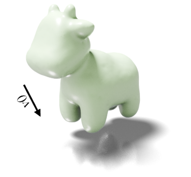
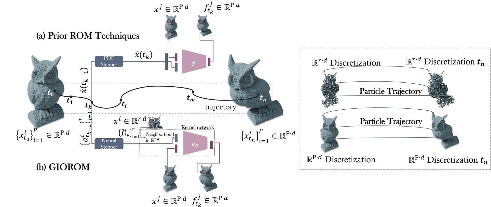
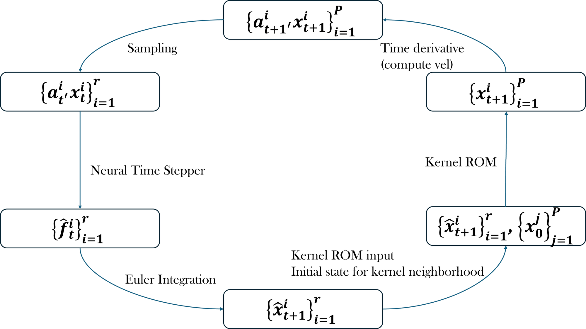
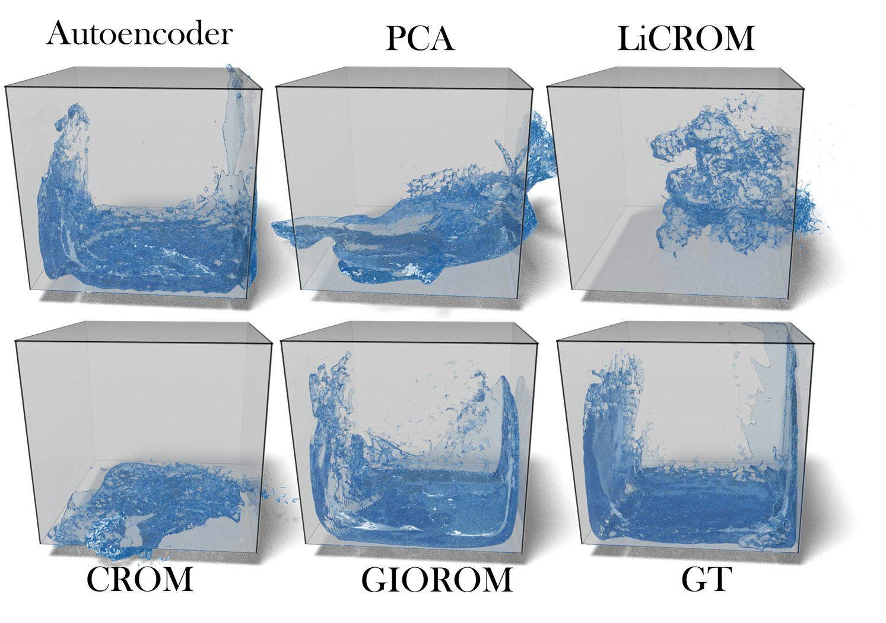
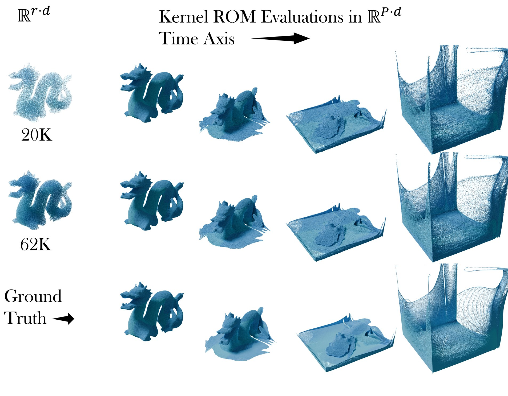
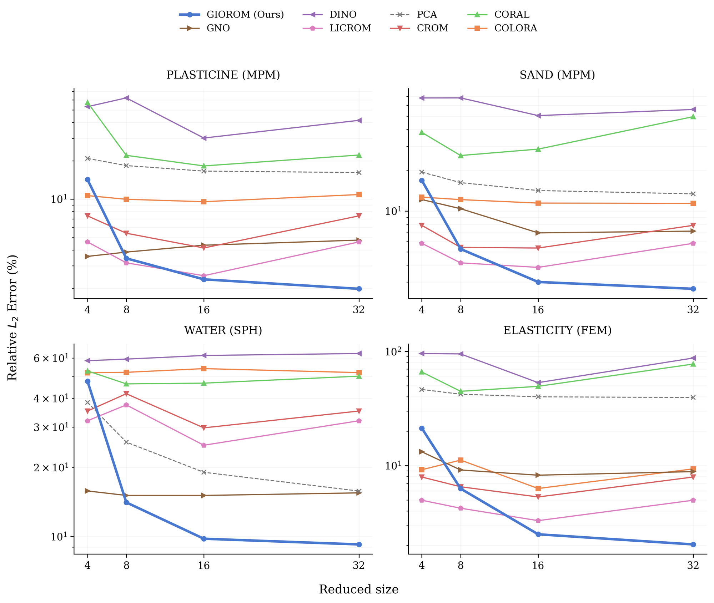
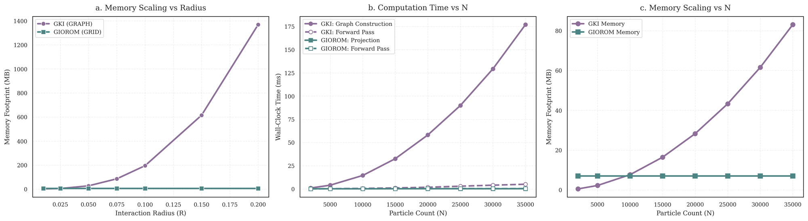
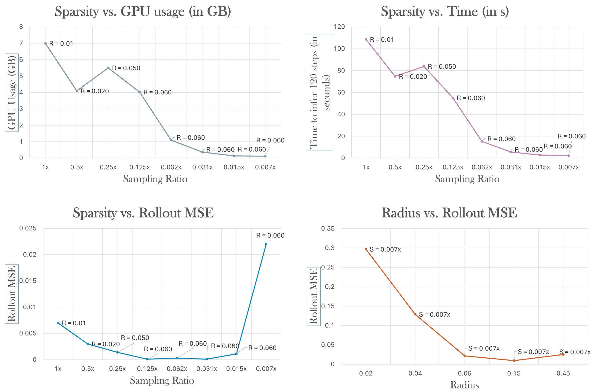
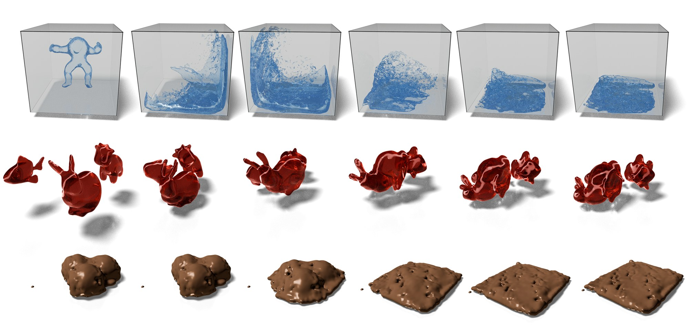

Simulating physical systems governed by Lagrangian dynamics often entails solving partial differential equations (PDEs) over high-resolution spatial domains, leading to significant computational expense. Reduced-order modeling (ROM) mitigates this cost by evolving low-dimensional latent representations of the underlying system. While neural ROMs enable querying solutions from latent states at arbitrary spatial points, their latent states typically represent the global domain and struggle to capture localized, highly dynamic behaviors such as fluids. We propose a sampling-based reduction framework that evolves Lagrangian systems directly in physical space, over the particles themselves, reducing the number of active degrees of freedom via data-driven neural PDE operators. To enable querying at arbitrary spatial locations, we introduce a learnable kernel parameterization that uses local spatial information from time-evolved sample particles to infer the underlying solution manifold. Empirically, our approach achieves a 6.6×–32× reduction in input dimensionality while maintaining high-fidelity evaluations across diverse Lagrangian regimes, including fluid flows, granular media, and elastoplastic dynamics. We refer to this framework as GIOROM (Geometry-InfOrmed Reduced-Order Modeling).
Classical ROMs project the state onto a fixed global basis and evolve its coefficients with reduced forms of the governing equations; neural-field ROMs then decode the latent state back to the full field. These global latents struggle with complex, fast-evolving local dynamics such as fluids, and still need the PDE to time-step. GIOROM instead evolves a small set of representative particles embedded in the physical domain with a data-driven Lagrangian solver, which preserves locality and needs no explicit governing equations, then reconstructs the full field from those particles with a discretization-invariant kernel.

Instead of a projection onto a global basis, the reduced-order model is a continuous integral operator with a learnable kernel \(\psi\). Given particle samples \(v \approx u\) produced by the time-stepper, the field at a query point \(x\) is a normalized, locally weighted aggregation of nearby samples, a continuous analogue of Nadaraya–Watson kernel regression:
Evaluating this over radius graphs scales poorly, so the samples are projected onto a fixed grid with trilinear basis functions, giving a feature field \(F_{grid}\) and a density field \(D_{grid}\), and the operator is approximated by stochastic interpolation around \(x\), where \(\xi \sim \mathcal{N}(0, \sigma^2 I)\) acts as a Monte Carlo Gaussian smoothing kernel:
The sparse particles are advanced by a neural PDE operator that adapts the UPT encode–process–decode architecture to autoregressive particle dynamics, with interaction-network encoder and decoder on a radius graph over the sample and a transformer processor in latent space: \(\phi_\Theta := IN^{dec} \circ NOT^{process} \circ IN^{enc}\). From a window of velocities \(\mathbf{v}_{t-w:t}\) it predicts per-particle accelerations, and positions follow by Euler integration. Mean aggregation in message passing makes the graph layers behave like a Monte Carlo approximation of kernel integrals, so the operator stays consistent as the sample changes; training on several random subgraphs per domain makes it invariant to the sampling ratio. The framework is agnostic to the choice of time-stepper.



| Rel. \(L_2\) error (%) ↓ | Plasticine-3D | Sand-3D | Water-3D | Elasticity-3D |
|---|---|---|---|---|
| PCA | 16.15 | 13.37 | 15.84 | 39.41 |
| DINo | 31.83 | 45.36 | 58.97 | 41.18 |
| CORAL | 21.85 | 25.80 | 53.71 | 46.24 |
| CoLoRA | 9.08 | 12.31 | 54.54 | 9.83 |
| CROM | 3.19 | 4.21 | 24.00 | 4.25 |
| LiCROM | 2.31 | 3.44 | 22.01 | 3.43 |
| GKI | 3.69 | 8.46 | 15.16 | 7.66 |
| GIOROM | 1.98 | 2.68 | 9.24 | 2.04 |
Unseen trajectories, 32 effective active degrees of freedom. GIOROM's peak memory is 17–268 MB, against 462–2970 MB for the graph-kernel baseline GKI and ≈400–630 MB for the latent-ODE ROMs.

| System | \(N\) | \(r\) | Scale | Rollout MSE (Ours) | Rollout MSE (GNS) |
|---|---|---|---|---|---|
| Water-3D | 55k | 1.7k | 32× | 38.6 | 17.4 |
| Water-2D | 1k | 0.12k | 8.3× | 6.70 | 7.55 |
| Sand-3D | 32k | 1k | 32× | 0.25 | 0.31 |
| Sand-2D | 2k | 0.3k | 6.6× | 1.34 | 1.21 |
| Goop-2D | 1.9k | 0.2k | 9.5× | 0.94 | 0.55 |
| Plasticine | 5k | 1.1k | 4.5× | 0.50 | 0.71 |
| Elasticity | 78k | 2.6k | 30× | 0.20 | 0.30 |
| Multi-material 2D | 2k | 0.25k | 8× | 9.43 | 12.1 |
Rollout MSE (×10−3) computed on the full particle set, with GIOROM evolving a graph up to 32× smaller than GNS. Errors stay within the same order of magnitude as the full-order oracle.
| 200-step rollout, 7056 points | radius 0.040 | 0.060 | 0.080 | 0.100 |
|---|---|---|---|---|
| GIOROM | 20.1 s | 47.6 s | 89.7 s | 109.3 s |
| GNS | 43.5 s | 111.6 s | 226.2 s | 386.0 s |
A transformer processor replaces recursive message passing, so the speedup widens from about 2× to 3.5× as connectivity grows.



In ultra-sparse regimes, when the sampled particle count leaves almost no active grid voxels, the estimator becomes ill-conditioned and the network falls back on its prior without local physical guidance. Like other learned ROMs, GIOROM degrades under extreme out-of-distribution conditions. It currently targets continuous systems with consistent time discretizations and Euler integration; discontinuities, unbounded flows, higher-order integrators and adaptive time-stepping are left to future work.
@article{viswanath2026learning,
title = {Learning Lagrangian Interaction Dynamics with Sampling-Based Model Order Reduction},
author = {Hrishikesh Viswanath and Yue Chang and Aleksey Panas and Julius Berner and Peter Yichen Chen and Aniket Bera},
journal = {Transactions on Machine Learning Research},
issn = {2835-8856},
year = {2026},
url = {https://openreview.net/forum?id=vXCQA1EzaG},
note = {Expert Certification}
}